Research Question: How are the changes of sexism in China, Japan and South Korea
Process:
1. Select one wave, I chose the wave from 2010 to 2014 as an example.
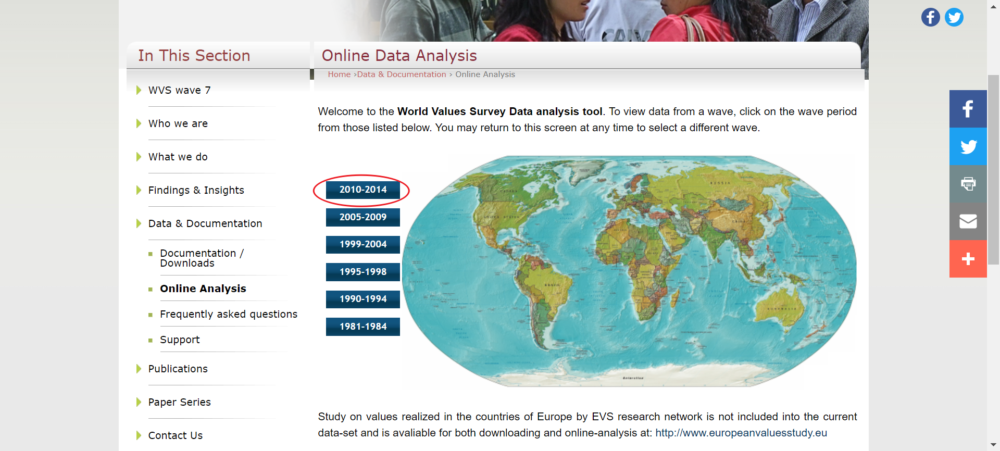2. Select the countries we want to research. I chose China, Japan and South Korea in this case.
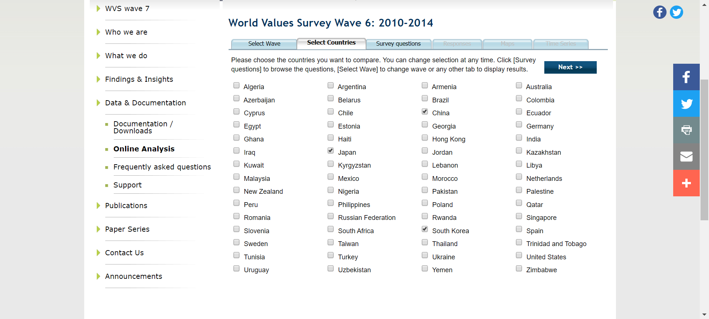4. It will show us the responses of this question. It shows the tabular data at first and I selected stacked bar graphics to see the results clearer.
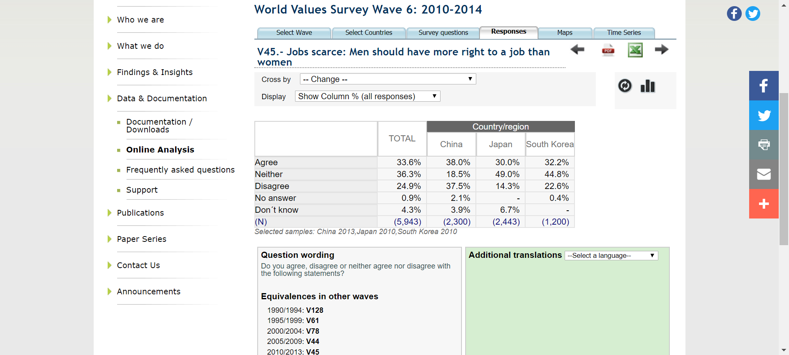 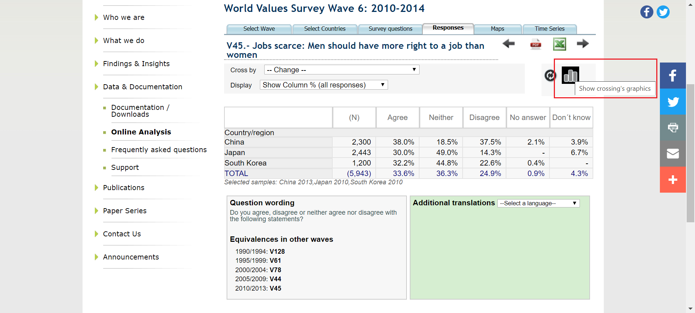 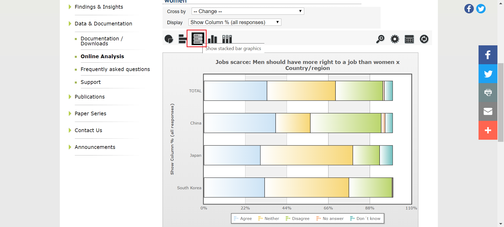When the mouse hovers above the total agree, it will show the exact number.
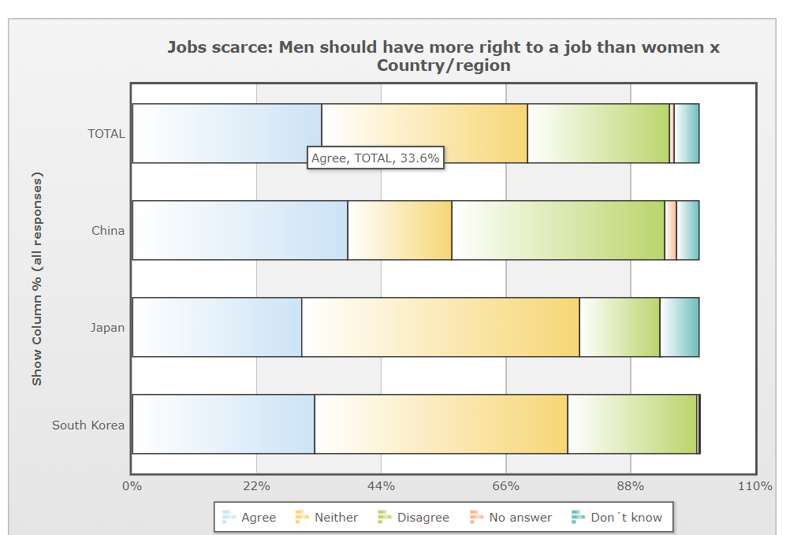 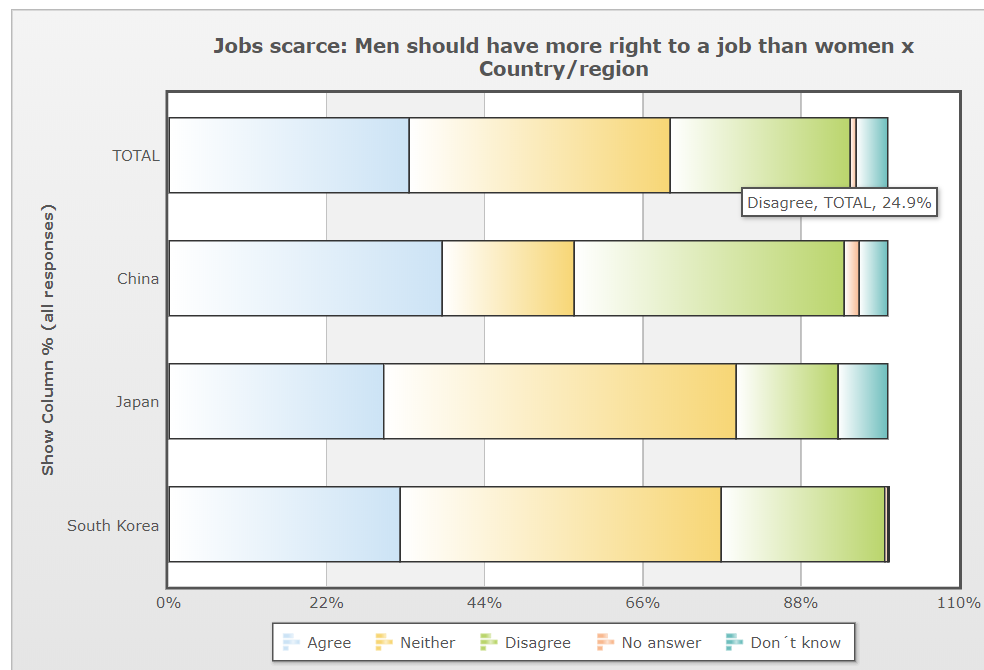5. Since I want to see the changes, I clicked Time Series to see the changes during these years.
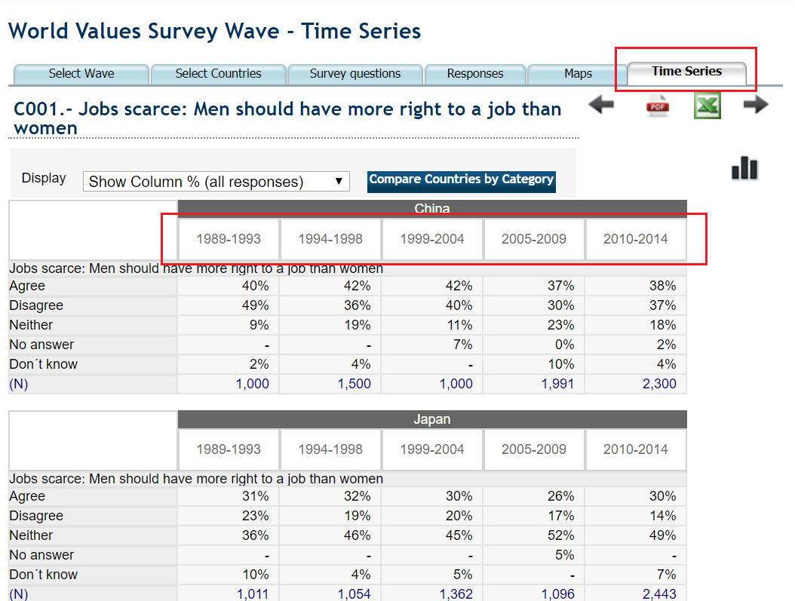6. Changed to the visual graph, but it can only show the results of one country at once.
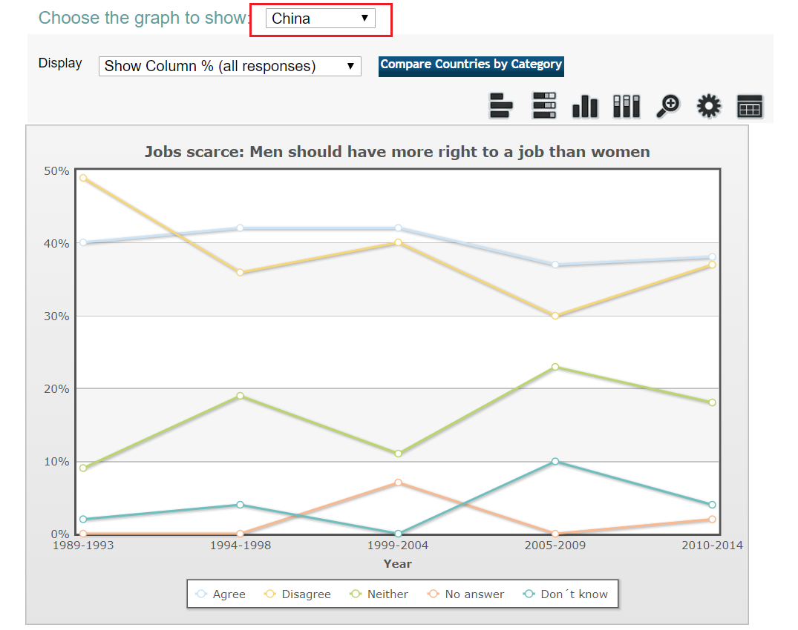 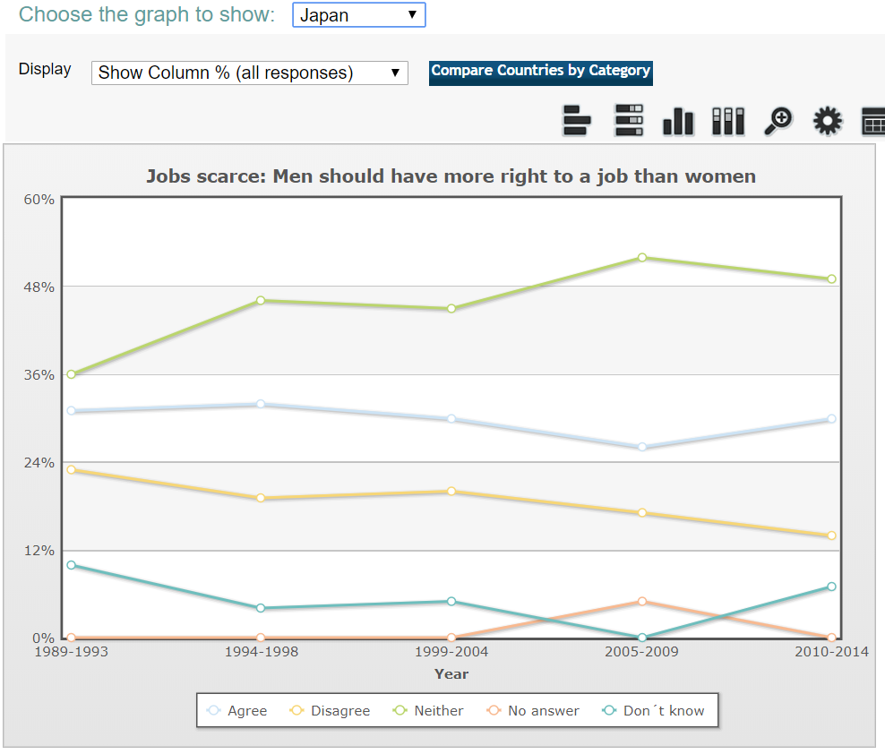 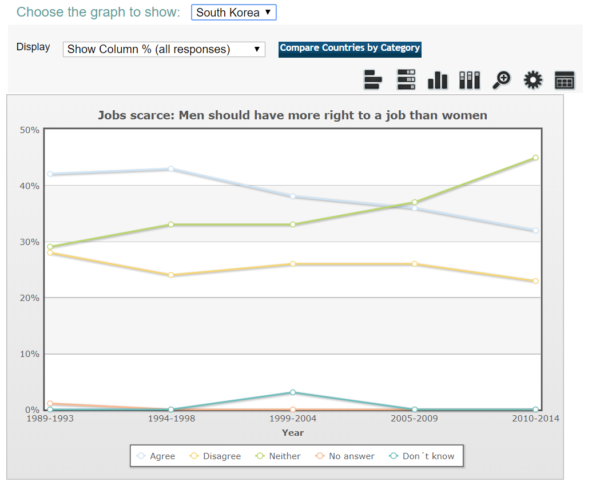Insight:
We can see from these graphs that more and more people neither agree nor disagree that men should have more right to a job than women and less people disagree with it in these 25 years. It seems like that the sexism in job hiring didn’t change better in these three countries or even worse.